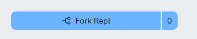
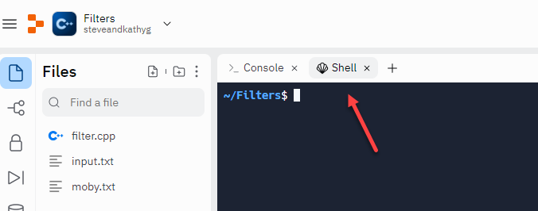

The cat Filter

Click the "running man" to open a Replit project which already contains a few files. Click the Fork Repl button to get your own copy, and then let's look at a few built-in Unix filters.

Close the editor tab (which contains the Makefile) and then click the link for the Shell.

Type the following command in the shell (terminal), and press ENTER.
The cursor simply blinks; you don't get a new prompt. Go ahead and type a few lines of text, pressing ENTER at the end of each line. The input you typed is echoed on the next line. Press CTRL+D to return to the prompt.
- Filter programs read from standard input and write to standard output.
- The cat filter concatenates each input character to standard output. In Windows, the equivalent filter is named type.
- The filter stops reading when it reaches end-of-file. In Unix, you simulate that by typing CTRL+D from the terminal. In Windows, it is CTRL+Z.
A filter is not meant to be run interactively. Instead, it is meant process a stream of data that is supplied from a file, a network stream or some other source. The easiest way to supply such a stream is to use input redirection.
 This course content is offered under a
CC
Attribution Non-Commercial license. Content in this course
can be considered under this license unless otherwise noted.
This course content is offered under a
CC
Attribution Non-Commercial license. Content in this course
can be considered under this license unless otherwise noted.